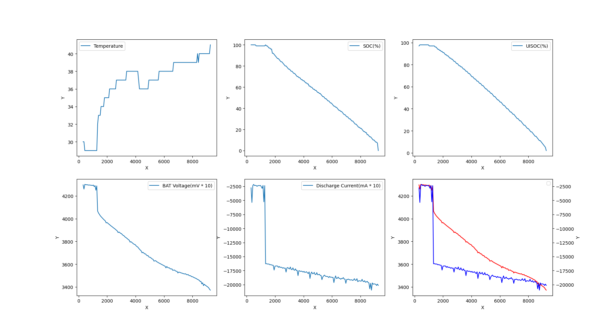

discharge_curve
MTK平台放电曲线
Android一直亮屏
布局文件任一可见View设置属性android:keepScreenOn="true"; 关闭时只需把true改为false即可。
curve
电流突然增大的原因是加了一个水泥电阻来放电，充实看到电池电压被拉低，原因是电池电芯是存在内阻的，当放电电流增大，电芯内阻消耗的电压也会增加；
电池温度有变化的原因是，中午去吃饭，把机器换了一个工作台位置，所以温度降低了；
由于采用了水泥电阻放电，会出现电压浮低，提前关机，开机的时候电压恢复到正常电压，所以不会经历涓流、预冲阶段，另外就是系统有设置关机电压，所以不一定能放电放到可以满足执行涓流、预冲条件。
